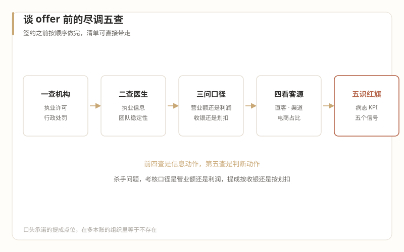

2怎么进
谈 offer 之前——薪酬、组织与试用期
本篇回答：落地的最后一公里。全篇工具化，清单可直接带走用。
一、薪酬结构：先接受游戏规则的差异
实况一：底薪 + 提成是普遍结构。 尤其是离成交近的岗位（咨询师、现场运营），收入与"卖出去多少"直接挂钩。这个结构不是公司的抠门，是行业薄利 + 销售导向的自然结果（第 03 篇）。管理岗的浮动部分常与营业额挂钩。
实况二：考核口径常常是营业额，不是利润。 这不只是历史通病，它有结构性的成因——"老板们出于某种不可公开的目的，不愿意让职业经理人了解机构的成本结构和利润情况"，或者"老板自己根本不懂财务，里外都是一本糊涂账"（《中国医美业最大的笑话》，2019-01-11）。
实况三：没有行情价可以查。 大厂跳槽有 level 和总包坐标系，这里没有。同类岗位在不同城市、不同模式机构（直客/渠道/双美）之间差异极大。语料没有给出可引用的薪酬数据——所有"医美运营平均月薪"类的帖子，都标"需另行核验"。你的坐标系只能靠面谈横向比：同一城市至少面四家，提成点位和底薪结构就能拼出大致区间。
谈 offer 的一个杀手问题：直接问"这个岗位的考核口径是营业额还是利润？提成按收银算还是按划扣算？"——第 03 篇讲过收银和划扣的区别。这个问题一出口，懂行的老板会对你刮目相看，不懂行的机构会顾左右而言他，而后者的反应本身就是尽调结果。
二、组织形态：你以为入职的是公司，实际加入的常常是生意
预期管理清单，逐条对照：
- 支持系统不存在。 没有HRBP、没有法务、没有财务BP、没有IT部门。行政、合规、采购可能都是你的——因为经营院长的工作清单本来就这么长（第 04 篇）。
- 职级通胀与职级清零并存。 机构爱给大厂人高头衔（"运营总监"管两个人是常态），同时你的旧职级不承兑（第 08 篇死法二）。入职时的心理定位建议：头衔往上看，心态往执行层放。
- 决策链极短。 最大的流程是老板的一句话，最快的审批是当场拍板。你会在一周内爱上这种效率，然后在某个深夜意识到：效率的另一面是，你的项目也可以被一句话取消。
- 人员流动性高。 "团队人员过于频繁的更换对业绩是有很大的伤害的"（《什么人能当医美机构的经营院长？（一）》，2018-10-26）——这是行业共识级的痛点。你入职时的团队，一年后的留存率是你自己的健康指标。
三、尽调清单：五查
签约之前，按顺序做完这五件事。前四查是信息动作，第五查是判断动作。
一查机构。 查《医疗机构执业许可证》的诊疗科目（美容外科/美容皮肤科等科目决定了它能做什么项目）、查行政处罚公示（卫健、市监两条线，虚假宣传和违规广告是高发项）。查询入口随监管平台调整，发布前按最新渠道核验——本系列不写具体网址，写"去查"这个动作本身。
二查医生。 主诊医生的执业信息、多点执业记录、在本机构的稳定性。医生团队稳定的机构，经营底盘通常更稳（2018-10-26 的共识判断）。医生流动性高的机构，你的获客工作会像往漏水的桶里灌水。
三问口径。 考核口径（营业额/利润）、提成基数（收银/划扣）、发放周期。全部要书面。口头承诺的提成点位，在"多本账"的组织里等于不存在（第 03 篇的糊涂账警告）。
四看客源结构。 直客（自然到店、平台引流）、渠道（生美供客）、双美（自有生美）的占比。这决定了你未来的工作内容：直客机构你做投放和转化，渠道机构你做渠道关系和交付衔接，双美机构你做两条线的联动。也决定了风险敞口：渠道模式的合规暴露面和"渠道拿走大部分利润"的成本结构（第 02、03 篇），应该在谈薪时就折进你的定价。
五识别病态 KPI。 出现以下任何一条，慎重考虑：
- 考核只看营业额，对利润和客诉只字不提（2019-01-11 的通病，至今是有效的负向信号）；
- 鼓励超量推销、超大单（"咨询师开单、医生照做"被行业证明是纠纷之源——《医美咨询师，请做时间的朋友》，2020-06-23）；
- 默许夸大宣传、疗效承诺（第 12 篇的五类灰色决定，在面谈阶段就能从对方的只言片语里闻到）；
- 提成规则说不清、写不下、随时变；
- 医生团队近一年换过半。

四、试用期谈判：值得的让步与红旗条款
值得的让步（用它们换你想要的东西）：
- 降薪换赛道：底薪低于大厂是必然，用确定性换入场券是合理交易，但降幅要匹配你的储备（6 个月生活费标准）；
- 短考核周期：主动提出"3 个月一考核、目标书面化"，用它换双方的退出自由；
- 先挂执行职级：用虚的总监头衔换实的项目权限，多数机构乐于做这笔交换。
红旗条款（出现即要求书面化，拒绝书面化即视为答案）：
- "提成比例先进来再说"——进来之后就不再说了；
- "考核目标到时候看情况定"——到时候定的是你够不到的目标；
- "我们这里不签这么细"——不是不细，是不想留痕（第 04 篇：成本和规则的不透明是结构性的，不是针对你）。
五、翻译器：总包 / 期权 → 底薪 / 提成
直译（成立处）：都是"固定 + 浮动"的薪酬结构，浮动部分都用来对齐个人与组织的利益。
失真处：大厂的总包坐标系有市场定价和 level 体系背书，期权是对公司未来的定价——有流动性事件作为兑现场景。这里的浮动部分（提成）是对当期销售的赌注，没有流动性事件，只有现金流；而且提成基数（收银还是划扣）本身就是个利益分配问题。你在旧世界谈的是"价值和增长"，在新世界先要谈清楚"钱怎么数"。
大厂人的典型错误：只谈底薪，不好意思细问提成——觉得谈钱伤感情，或者觉得提成是小事。在这个行业，提成结构就是岗位的说明书：它告诉你这家机构到底在奖励什么行为。奖励大单的机构做的是销售生意，奖励复购的机构做的是客户生意，奖励"成单与医生决策匹配度"的机构在做医疗生意（2020-06-23）。谈钱就是在谈价值观，别跳过这一步。
键盘 ← → 可翻篇，手机屏幕左右边缘滑动同样有效